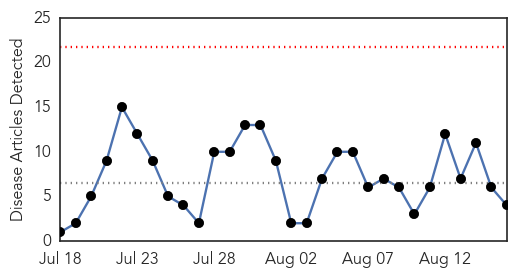
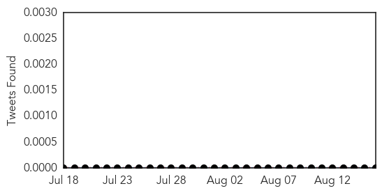
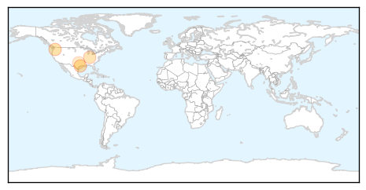
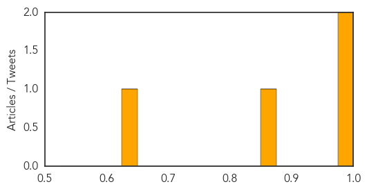

Toggle navigation
Early Warning
Daily Alerts
West Nile Virus
Aug 16, 2015
30 Day Trends
Web: 0
alerts
, 0
warnings
Twitter: 1
alerts
, 0
warnings
Top Articles:
0.998
Washington Department of Health - Bonney Lake-Sumner Courier-Herald
0.978
Brooklyn Man Tests Positive for West Nile Virus
0.857
Clark, Floyd county mosquitoes test positive for West Nile
0.645
City of Dallas reports third human West Nile Virus case
Top Tweets:
0.510
Flavivirus news: Season's 1st human case of West Nile virus in NYC confirmed - Washington Times... http://t.co/brPQV3U4eI pathogenposse
Web/News Articles

Tweets

Article Locations

Article Confidences
